9ª Expotec · IFRN Campus Pau dos Ferros
Núcleo de Análise de Dados e Inteligência Computacional
Hub de pesquisa e inovação do IFRN em software com IA e análise de dados.
NADIC
Quem somos
Hub de pesquisa e inovação do IFRN, especializado em soluções de software avançadas com IA e análise de dados.
NADIC
Formando os talentos do futuro
Soluções de software
- Visão computacional
- Suporte técnico
- Análise de dados
- Desenvolvimento mobile
- Sistemas corporativos
- IoT
- P&D&I
- IA
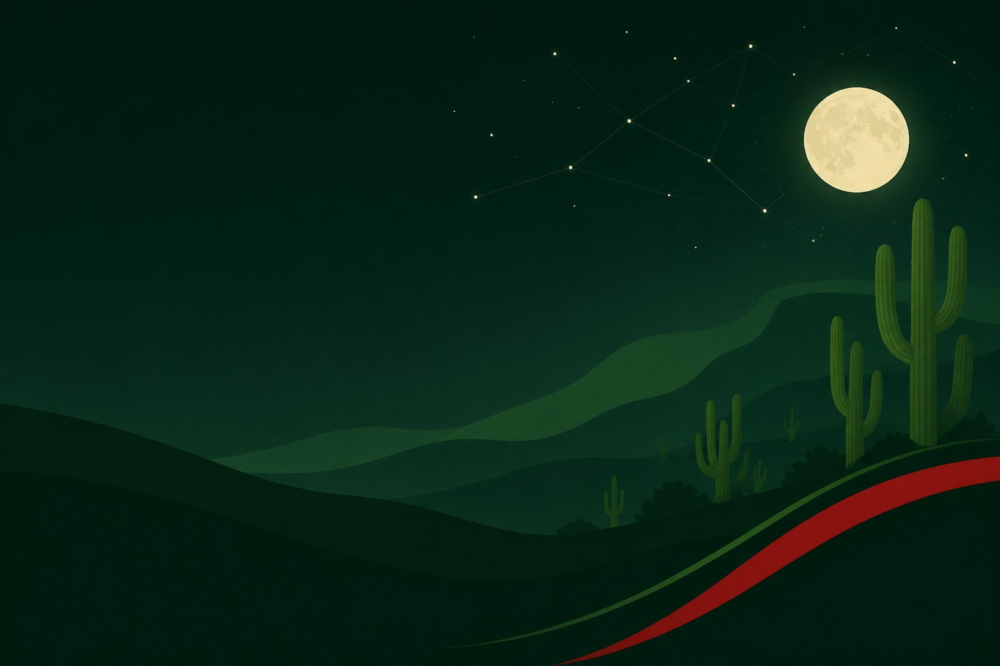
02/04
Projetos públicos
Tela Brasil · Pé-de-Meia · PEIs
Projetos públicos
O streaming público da educação
e da cultura
Projetada e operada pela nossa equipe
Do envio de conteúdo ao aplicativo do espectador, cada camada.
- Mais de 100 mil espectadores simultâneos
- Legendas, audiodescrição e modo de baixa banda
- Dados protegidos com criptografia
Projetos públicos
O maior programa social de permanência
escolar do Brasil
Como funciona
- 1R$ 200 de incentivo à matrícula, por ano do ensino médio
- 2R$ 200 mensais, conforme a frequência
- 3R$ 1.000 ao concluir cada ano do ensino médio
- 4R$ 200 por participar do Enem
Recursos federais para quem permanece na escola.
Projetos públicos
PEIs — Planos Educacionais
Individualizados
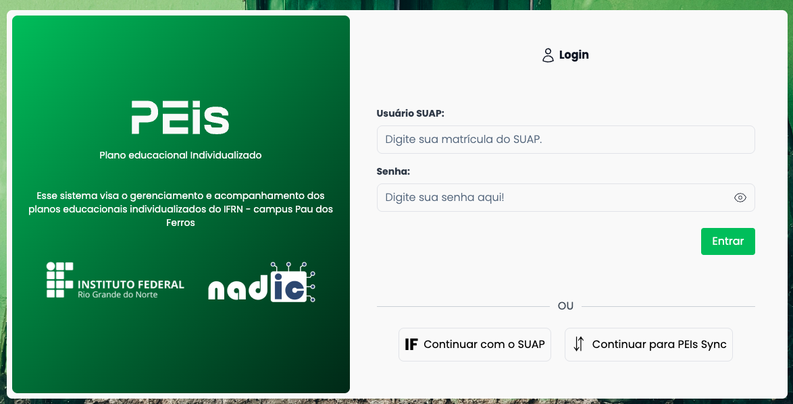
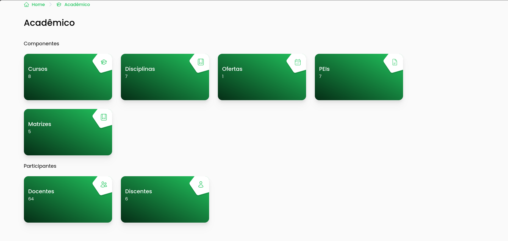
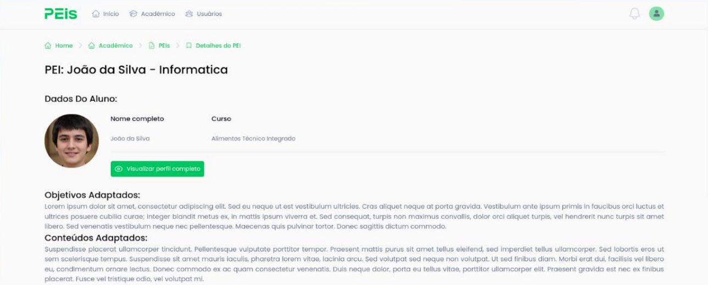
Fonte: Censo Escolar da Educação Básica, INEP
- Informações centralizadas e de fácil acesso
- Gestão colaborativa: professor, pedagogo, assistente e coordenador
- Integração com o SUAP
03/04
Projetos privados
Pechinchou · Thalocan · HAPI
Projetos privados
Impacto local
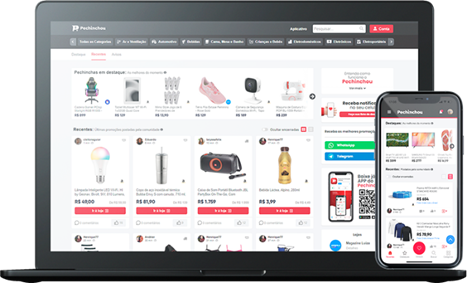
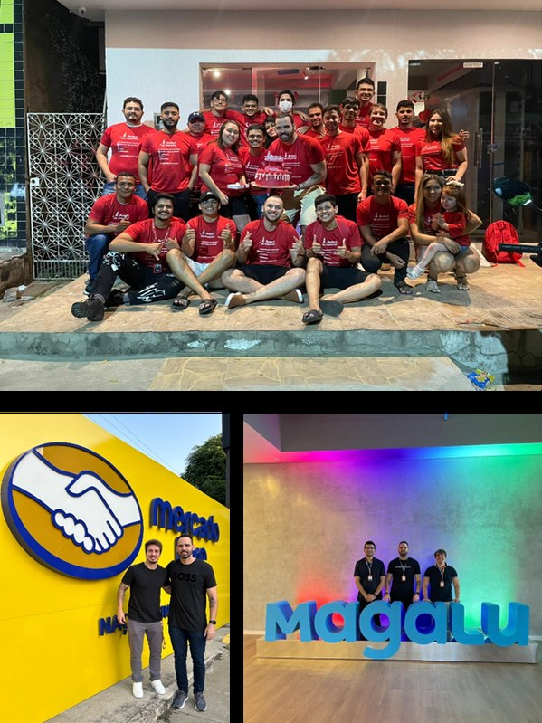
Projetos privados
Frente internacional:
software global para estudos clínicos
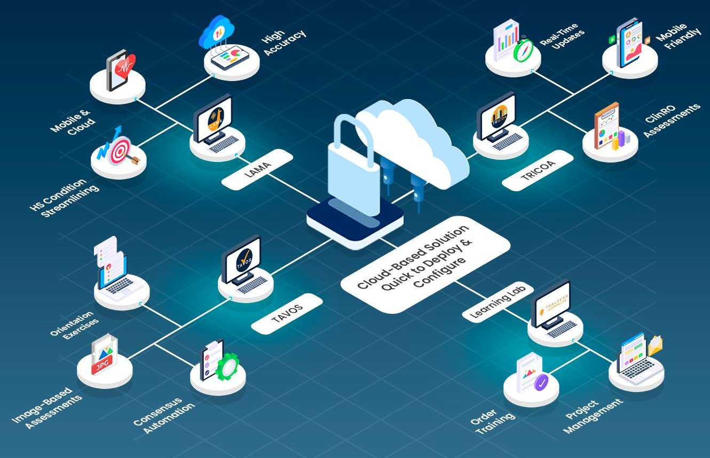
Solução emnuvem
- Dados separados por região: EUA e Europa
- Conformidade 21 CFR Part 11 / Anexo 11
Em produção, com clientes reais
- LAMAavaliação de lesões
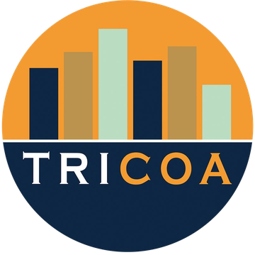
TRICOAestudos clínicos- TAVOStreino de avaliadores
- Learning Labtreinamento e projetos
Projetos privados
HAPI — Hardware Avançado para Imagens Médicas
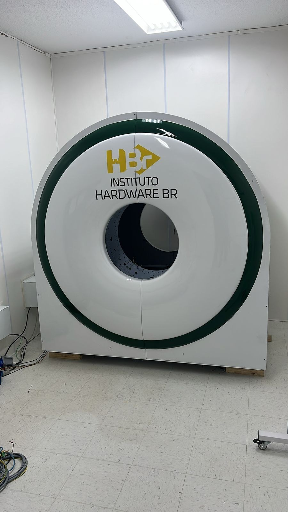
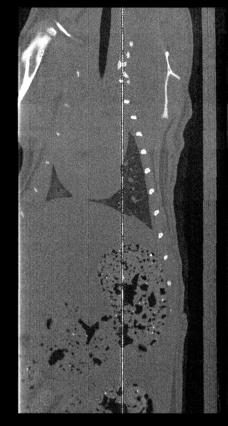
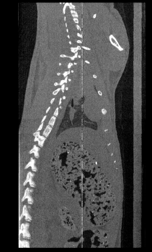
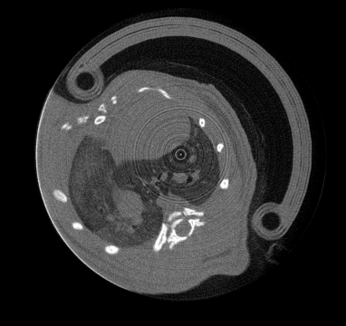
- RECON3: reconstrução 3D em GPU
- 11 pesquisadores, 10 doutores
- 8 artigos em congressos e 2 em revistas
Arquitetura do Servidor RECON
Origem e uso
Hardware BR ElectronAPI do servidor
FastAPI tempo real (SSE)Processamento
CUDA RedisDados e auditoria
MinIO PostgreSQL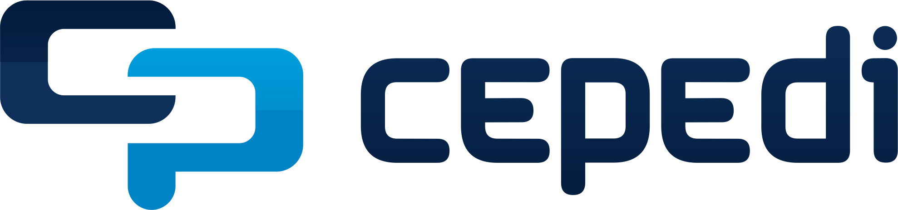
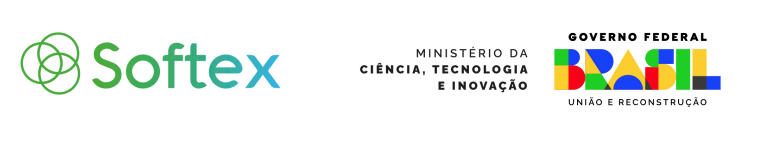
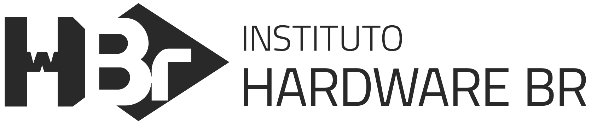
Parceiros
Quem constrói com a gente
Instituições por estado
Instituições
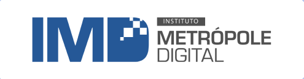
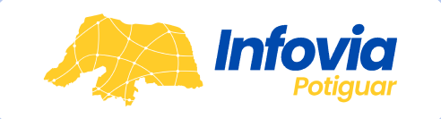
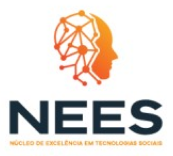
Empresas
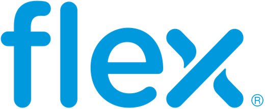
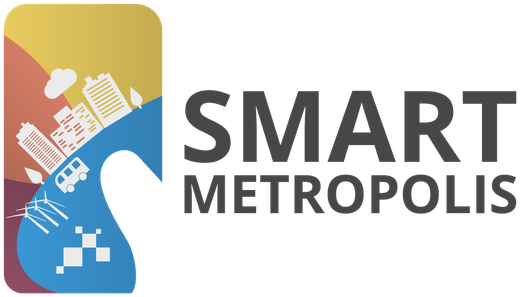
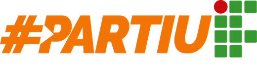
Obrigado por visitar
a Expotec
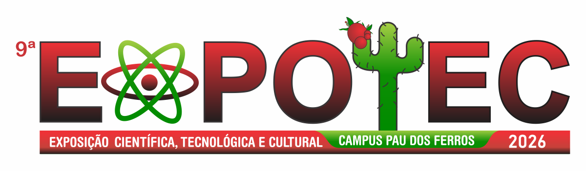